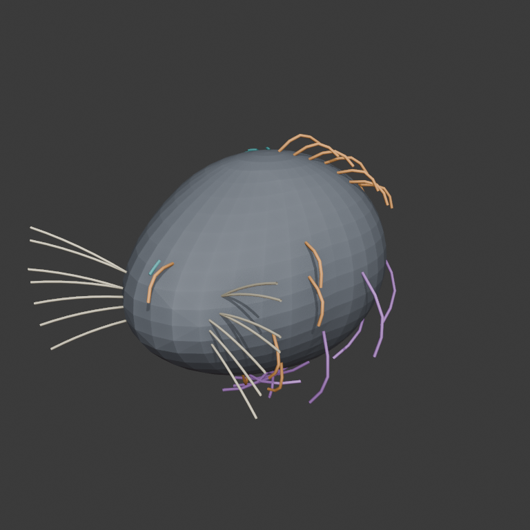
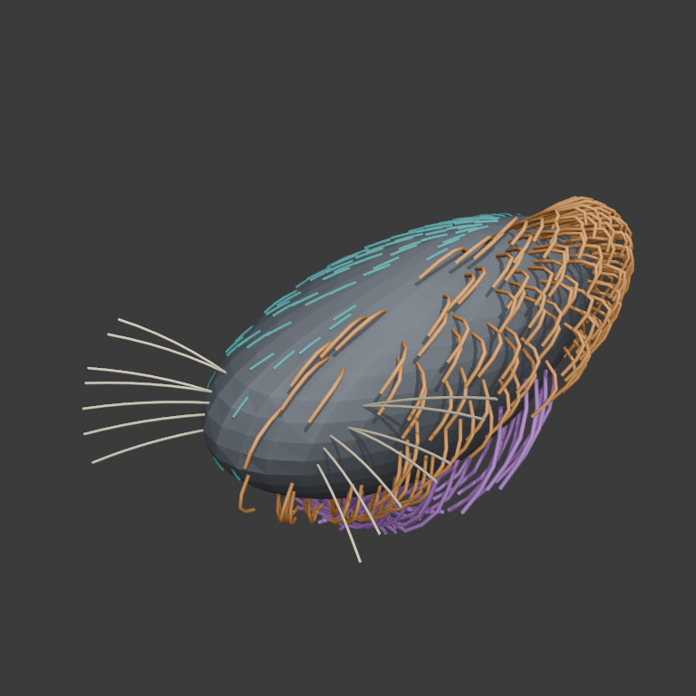

Short coat — low puff
Teal half. Guide length 0.14; lift 0.08. Short fibers remain close and quiet against the carrier.
One page for judging the representation—not its recovery. The carrier and groom are authored truth. Nothing on this page is a VLM, SAM, TRELLIS, hidden-carrier, or production-groom result.
“Puff” is a parameter bundle inside the same short-coat mechanism. “Ruff” is a different, explicitly guided fibrous system. These names are local to this fixture; they are not universal biological categories.
Teal half. Guide length 0.14; lift 0.08. Short fibers remain close and quiet against the carrier.
Orange half. Guide length 0.40; lift 0.95. Same field representation, now pushed unmistakably outward from the carrier.
Purple lower/rear band. Explicit guides, length 0.78 and lift 0.58; deliberately long, directional, sparse, and silhouette-bearing rather than merely “more puff.”
Cream bilateral sparse curves. Seven per side, instantiated from mystacial-pad location and coarse preset parameters—not strand segmentation.



The Kaminos viewer uses neutral lighting and may wash out membership colors. Rotate this view to inspect physical curve geometry; use the fixed colored views above for membership comparison.
{kind=link}
{kind=link}